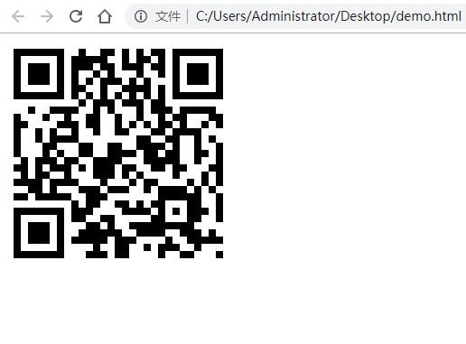

二维码又称QR Code，QR全称Quick Response，是一个近几年来移动设备上超流行的一种编码方式，它比传统的Bar Code条形码能存更多的信息，也能表示更多的数据类型。
二维条码/二维码（2-dimensional bar code）是用某种特定的几何图形按一定规律在平面（二维方向上）分布的黑白相间的图形记录数据符号信息的；在代码编制上巧妙地利用构成计算机内部逻辑基础的“0”、“1”比特流的概念，使用若干个与二进制相对应的几何形体来表示文字数值信息，通过图象输入设备或光电扫描设备自动识读以实现信息自动处理：它具有条码技术的一些共性：每种码制有其特定的字符集；每个字符占有一定的宽度；具有一定的校验功能等。同时还具有对不同行的信息自动识别功能、及处理图形旋转变化点。
l 信息容量大, 可以容纳多达1850个大写字母或2710个数字或500多个汉字
l 应用范围广, 支持文字,声音,图片,指纹等等...
l 容错能力强, 即使图片出现部分破损也能使用
l 成本低, 容易制作
L级（低） 7％的码字可以被恢复。
M级（中） 的码字的15％可以被恢复。
Q级（四分）的码字的25％可以被恢复。
H级（高） 的码字的30％可以被恢复。
qrious是一款基于HTML5 Canvas的纯JS二维码生成插件。通过qrious.js可以快速生成各种二维码，你可以控制二维码的尺寸颜色，还可以将生成的二维码进行Base64编码。
qrious.js二维码插件的可用配置参数如下：
|
参数 |
类型 |
默认值 |
描述 |
|
background |
String |
"white" |
二维码的背景颜色。 |
|
foreground |
String |
"black" |
二维码的前景颜色。 |
|
level |
String |
"L" |
二维码的误差校正级别(L, M, Q, H)。 |
|
mime |
String |
"image/png" |
二维码输出为图片时的MIME类型。 |
|
size |
Number |
100 |
二维码的尺寸，单位像素。 |
|
value |
String |
"" |
需要编码为二维码的值 |
下面的代码即可生成一张二维码
|
<html> <head> <title>二维码入门小demo</title> </head> <body> <img id="qrious"> <script src="qrious.min.js"></script> <script> var qr = new QRious({ element:document.getElementById('qrious'), size:250, level:'H', value:'https://www.baidu.com' }); </script> </body> </html> |
运行效果：

大家掏出手机，扫一下看看是否会看到百度的首页呢？
插件源码：
链接：https://pan.baidu.com/s/1xS6kanj1mK8kFET1JwyOLw
提取码：5hes
如果失效可以找我，评论私信都会看到的！
留个赞再走呗！